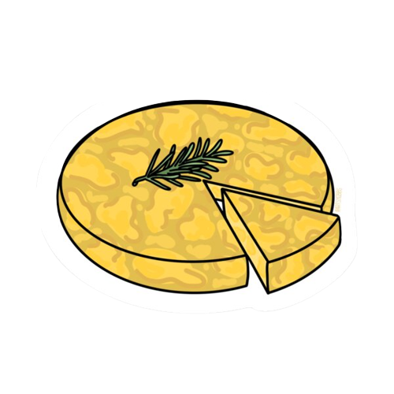
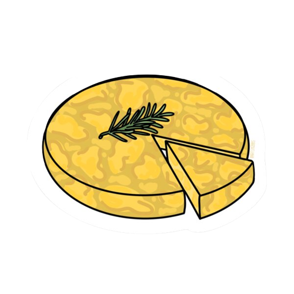

- Cortar la papa al medio, utilizando una mitad cortarla de igual manera y rebanarla en pequeñas rodajas.
- Colocar bastante aceite en el sarten.
- Poner el sartén a fuego fuerte y cuando esté tibio, no hirviendo, agregamos todas las papas cortadas.
- Las dejamos cocinar durante 5 minutos.
- Cortamos las cebollas y una vez pasados los 5 minutos las agregamos al sartén con papas.
- Revolvemos todo bien para que este integrado en el sarten.
- Agregamos media cucharada de sal, bajamos el fuego al minimo y tapamos el sarten dejando una breve abertura para que pueda salir el vapor durante 15-20 minutos.
- Una vez las papas esten cocidas, las dejamos en un colador hasta que baje todo el aceite.
- Colocar los huevos en un bol con un poco de sal y batirlos durante unos minutos.
- Agregar las papas con cebolla al bol y revolver hasta que esté todo bien integrado.
- Ponemos un chorro de aceite en un sartén y la colocamos a fuego fuerte.
- Cuando esté bien caliente el aceite, agregamos la mezcla del bol y movemos la sartén agitándola durante 30 segundos.
- Luego de los 30 segundos vamos a poner el fuego bajo y con una espátula vamos a ir corrigiendo los bordes mientras se va cociendo. El tiempo de cocción depende exclusivamente de la forma en la que a uno le gusta, en este video es de 5 minutos.
- Colocar un plato encima del sarten y dar vuelta la tortilla.
- Una vez dada vuelta emprolijamos los bordes y la dejamos unos minutos mas.
- Por ultimo, para sacarla la volvemos a dar vuelta.
¿Cómo hacer tortilla de papas?
Paulina Cocina nos enseña cómo hacer una tortilla de papas.
 
